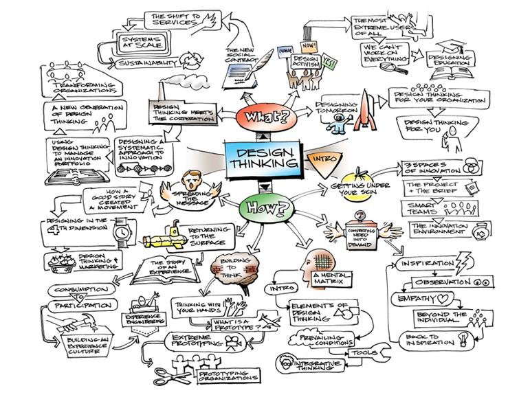
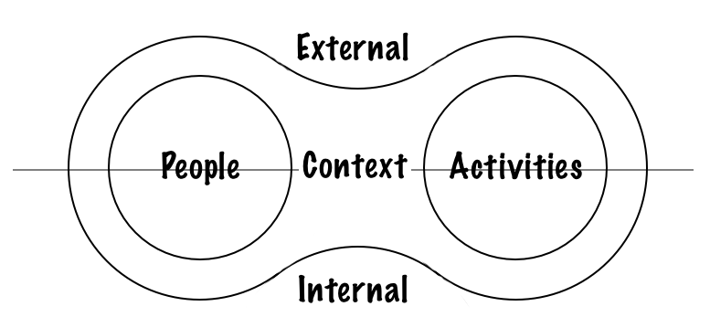
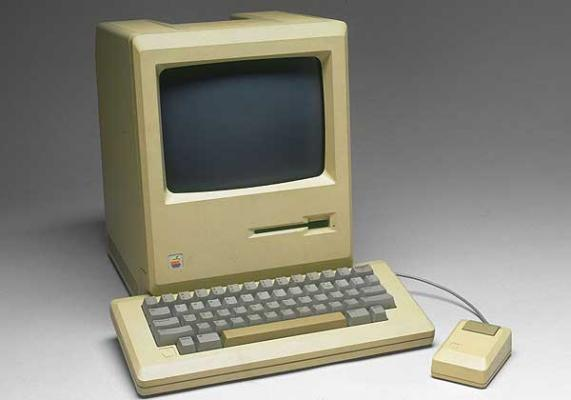
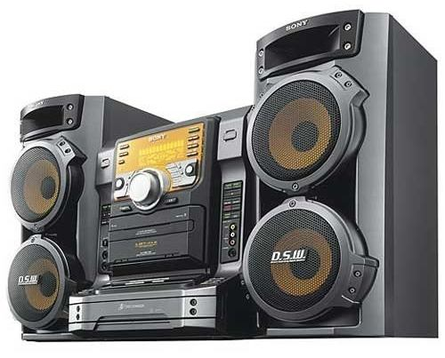
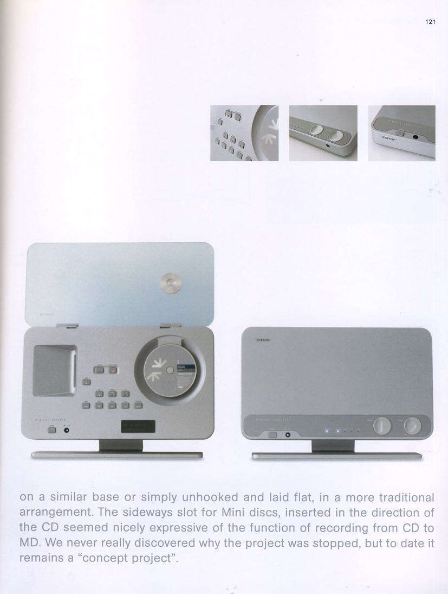

Design Thinking是一种设计理念，它所关注的重点不再是“使用”本身，而是通过理解用户内在心智模型、用户所处的环境、以及观察在心智模型和所处环境双重作用下的使用行为，去设计一种真正能够融入到他们的生活，被他们所依赖的产品。

用简单的话来描述，Design Thinking不单单思考用户如何使用，更多的是理解用户本身以及其所处环境 - not only to understand people's activities, also more importantly to understand people and their context (internally and externally) of those activities.
为什么Design Thinking更关注人本身和他们所在的环境而非直接的使用行为？
人和他的行为被上下文关联起来，只有基于某种上下文的情况下他才会选择开始这种行为。而这种上下文又分为内在和外在的，内在的指的是人本身的内在驱使和自然属性；外在指的是其所在的环境。

举一个例子：
场景：大家都在进行专心的讨论；这时候我的手机响了。
驱使我进行接手机这个行为的上下文分别是：
- 内在：我对于这个电话重要程度的判断，我对不接这个电话导致后果的经验等等；
- 外在：我做或不做这个行为对现在所处环境的影响，这种影响反过来对我的影响是什么等等； 内在外在的双重作用最后决定了我是否进行这样的活动。如果我对外在上下文的判断是：这是一个开放的环境，没有人会在乎你是不是中途接电话；如果我对内在上下文的判断是基于我上次不接电话的后果，我还是接为好。那么我也许就接了电话。
另外一种情况，我们会比较内外上下文的影响力：如果外在上下文的影响力超过内在──即就算我不接电话的后果也不会比接了电话严重，因为老板正在骂大家，那么我也不会接这个电话。
相反，如果打电话的是一位重要的客户并直接关系到项目的进展，就算外在上下文是老板训话，也许我也会接这个电话。
Design Thinking认为如果直接关注行为，而不关注人完成这种行为的内外上下文，很大的可能是我们只关注了“怎么用”，而一个被用户所依赖和喜爱的产品而言，“怎么用”往往是最后一步，更重要的是“谁会用”，“为何用”，“何时何地用”。
你说的跟产品设计有什么关系
产品是若干用户行为的整合，用户是否能够使用产品，取决于产品所能提供的行为组合，能够在用户“内在”和“外在”的上下文中找到“我要用”的结论。以苹果为例：
苹果之前的失败在于他们没有找到足够多的人，在其“内在”和“外在”的上下文中找寻到“我要用”的结论。苹果的失败期正是信息消费市场爆炸式增长的时期，而信息消费市场的爆炸基础是一个庞大的、趋于标准化的软硬件市场；而苹果在这一时期的做法是，Aza Raskin在回忆其父亲Jef Raskin参与设计第一代Macintosh的文章中引述一篇来自斯坦福计算机历史的回忆录：
There were to be no peripheral slots so that customers never had to see the inside of the machine (although external ports would be provided); there was a fixed memory size so that all applications would run on all Macintoshes; the screen, keyboard, and mass storage device (and, we hoped, a printer) were to be built in so that the customer got a truly complete system, and so that we could control the appearance of characters and graphics.
这种一体化，高集成，不开放，不对下兼容的设计与微软一直一来保有的向下兼容理念相左。在这个设计理念下，当最广大的消费者，保持一种对于信息消费饥渴的状态时，不论是内在或者外在的上下文都不足以支撑足够多的消费者选择“使用苹果”的行为。

但是，商业角度的错误不代表设计角度的一无是处，只是苹果的偏执一直着眼于一个尚未开封的市场，或者说是深深埋藏在用户上下文当中的某个特定领地──我关注的是工具能够产生的价值，以及过程的舒适程度，而不是让人知道我有多少种工具。
当这个深埋多年的念头慢慢成为绝大多数人的实质观点，它自然转化成为一种外在的上下文──信息消费是生活的一小部分，我只需要一个盒子，我对它说给我什么，它就能给我，至于其他我根本不会关心，就这么简单。
直到现在苹果依然保持着这种对于功能质量的偏执──安卓平台上的开放程序的质量是不能和Apple App相提并论的。这种偏执依然是基于一种对用户上下文的假设，既我们的设计，可以使目标消费群，在其“内在”和“外在”的上下文中找寻到“我要用”的结论。
这不就是根据用户需要设计吗？
确实，从本质上来说，设计产品的最终目的依旧是满足用户需要。但是对于“满足需求”的定义已经发生了相当的变化──当我们面对的是一个庞大数量的用户群体，这种需要的复杂程度超出想象，而绝对不是一纸需求列表可以解决。
消费主义的盛行滋养了产品设计中大而全的风格。这种风格在消费主义的背景下成为一种非常巧妙，成本极低的设计手段──我提供得越多，你越满意，我便不在乎你需要什么。于是“多功能”成为那个时代产品设计的关键词。

之后，Pareto Principle理论（80/20理论）衍生出对太多无用功能的反思，对于产品设计的关注更多转移到用户使用体验（使用体验有别于体验，后者更更广，前者更关注功能本身）的提升，这也正应对着一个充满个性时代（包括简约主义的流行）的到来，更多现代主义思潮开端时对于个人主体经验的推崇也开始引入到软件产品设计中来。于是这个时代产品设计的关键词变成“可定制性”、“我的专属”、“易用性”、“简约”。

从根本来说，这两种设计思路都仍然避不开对功能的过度关注──第一种思路认为多而广的功能能够让用户使用，第二种思路认为少而好的功能能够让用户使用。而是事实是：满足用户的需求不代表用户就会使用。能够驱使用户使用的围绕在用户和行为之间的内外在上下文。
而这便是Design Thinking与传统设计方法不同的核心──满足用户需求不能直接导致软件产品成功，分析驱动用户使用软件产品的上下文才是软件产品成功的关键。
怎样才算Design Thinking？
Design Thinking的经典思维模式有以下几种：
移情（Empathy）
Design Thinking的核心在于用户左右用户使用软件产品的上下文，移情帮助设计师将情绪转移到对象使用者身上，通过了解使用者的自然属性、社会地位、成长环境、生活习惯等，理解其内在和外在的上下问，从而理解是什么驱使他们产生使用产品的行为；
实验主义
Design Thinking的宗旨是"Build to design over design to build"，设计过程应该被切分成更多细小的实验单元，快速产生供实验的原型（例如sketch、storyboard和wireframes）和任何在设计过程中产生的东西都应该作为实验品快速废弃；
短反馈环
Design Thinking需要更短的反馈环，任何设计过程中的活动以及决定，都应该在更短的反馈周期进行验证和改进；
合作精神
Design Thinking是合作的艺术，请欢迎不同背景的创新者，并制造出鼓励合作创新的工作环境；
写在最后
编者的话：四年后，我重新梳理这篇关于设计思维的文章，其中的观点并不完善，设计思维更多是一种“设计方法论”，目的是帮助非设计背景的人士也可以进行有效的设计活动，而本篇文章的观点更多是HCD（人本设计）的某些观点，虽然在后半段关于设计思维思考方式的论述是正确的。此亦可看见四年来作者思考体系的逐步完善和成熟，权作记录，不做删除。